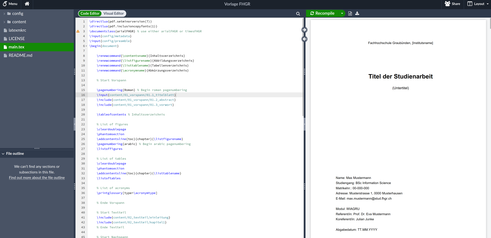
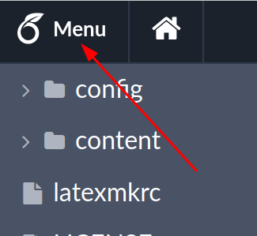
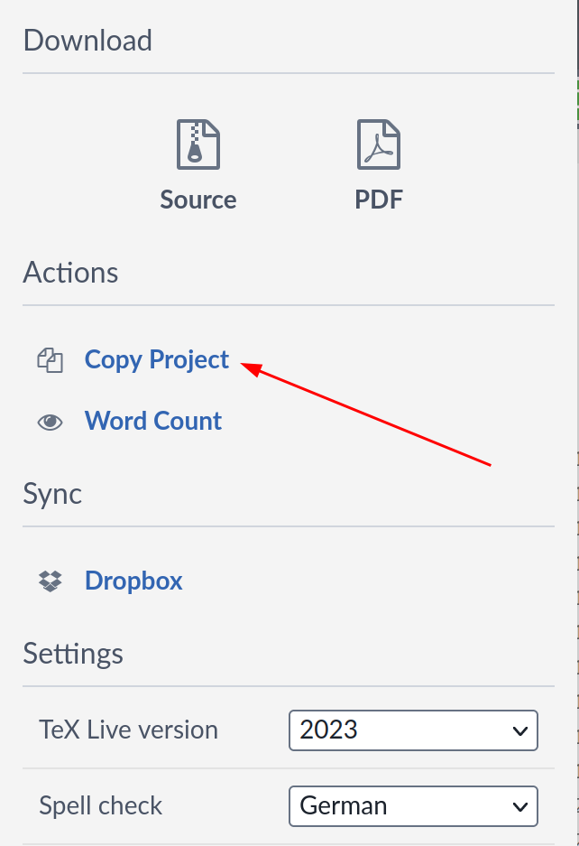
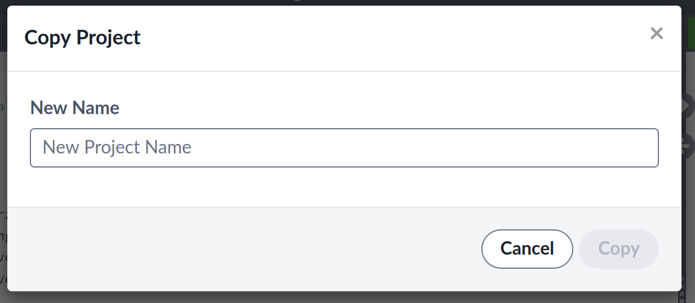
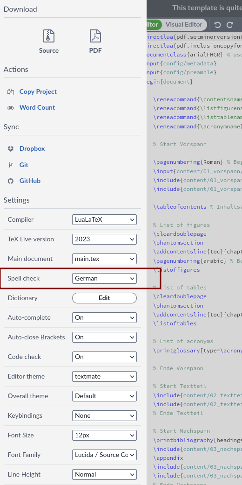

Diese Vorlage erlaubt es Studierenden der FHGR Arbeiten in LaTex zu schreiben. Alle notwendigen Einstellungen sind bereits vorhanden. Somit geht keine Zeit verloren zum Aufsetzen des Projektes. Als Resultat erhält man ein PDF (PDF/A-2u (Mit veraPDF validiert)).
Die Vorlage kann direkt auf Overleaf unter https://www.overleaf.com/read/vcyttfbpdhwp abgerufen werden.
| Schritt | Beschreibung | Bild |
|---|---|---|
| 1 | Login in to your overleaf account. If you do not have one yet create one here and then sign in. | |
| 2 | Open the example project at Overleaf |  |
| 3 | Click on the Menu button |  |
| 4 | In the sidebar click on Copy Project |  |
| 5 | Give the project a name. Then continue with Copy. Wait a few seconds. Your new project will load and you can begin writing. |  |
Die Vorlage ist in LaTeX geschrieben. Um LaTeX kennenzulernen bietet Overleaf einen eine kurze Anleitung an:
https://www.overleaf.com/learn/latex/Learn_LaTeX_in_30_minutes (Englisch)
Im Beispielprojekt ist einiges zur Verwendung des Projektes beschrieben.
| Datei / Ordner | Zweck | Muss ich das bearbeiten? |
|---|---|---|
| config/ | Konfigurationdateien für das Projekt | |
| config/arialFHGR.cls | Styles für Arial | nein |
| config/metadata.tex | Erfassen der Autoren, Titel der Arbeit usw. | ja |
| config/preamble.tex | Einstellungen für das Projekt | nein |
| config/timesFHGR.cls | Styles für Times New Roman | nein |
| content/ | Hier kommt der Inhalt, der auf das PDF soll | |
| content/00_assets/ | Bilder und Bibliographieverzeichnis | |
| content/00_assets/alpendohle.jpg | Beispielbild zum zeigen, wie ein Bild eingebettet wird | kann gelöscht werden |
| contents/00_assets/quellen.bib | Hier kommen die Quellen hinein | ja |
| contents/00_assets/unterschrift.png | Als Unterschrift für die Selbständigkeitserklärung | ja |
| contents/01_vorspann/ | Teile bis vor dem Inhaltsverzeichnis | |
| contents/01_vorspann/01.1_titelblatt.tex | Titelblatt der Arbeit. Inhalt wird durch config/metadata.tex verändert |
nein |
| contents/01_vorspann/01.2_abstract | Der Abstract der Arbeit. Wird das nicht gebraucht, so kann der Inhalt der Datei geleert oder mit einem % auskommentiert werden. |
ja |
| contents/01_vorspann/01.3_vorwort.tex | Das Vorwort der Arbeit. Wird das nicht gebraucht, so kann der Inhalt der Datei geleert oder mit einem % auskommentiert werden. |
ja |
| contents/01_vorspann/01.4_abkuerzungsverzeichnis.tex | Enthält alle Akronyme. (Nur im Text verwendete Akronyme werden im PDF angezeigt.) | ja |
| content/02_textteil/ | Hier kommt der eigentliche Inhalt der Arbeit. Die Dateien, die in diesem Ordner enthalten sind können als Vorlage verwendet werden. Weitere können und sollen hinzugefügt werden. Anpassungen dann im main im Abschnitt % Start Textteil<br>\include{content/02_textteil/einleitung}<br>\include{content/02_textteil/kapitel1}<br>% Ende Textteil |
|
| content/02_textteil/einleitung.tex | Beispielkapitel | ja |
| content/02_textteil/kapitel1.tex | Beispielkapitel. Mit vielen nutzülichen Tipps und Beispielen. | ja |
| content/03_nachspann | Kapitel nach dem Text | |
| content/03_nachspann/anhang.tex | Analog dem Haupttexteil aber für den Anhang. | ja |
| content/03_nachspann/eiderklaerung.tex | Die Eiderklärung. Datum und Ort sind anzupassen. | ja |
| content/03_nachspann/hilfsmittelverzeichnis.tex | Tabelle mit den verwendeten Hilfsmitteln | ja |
| documentation/ | Bilder für das README.md auf GitHub. Kann ignoriert werden | nein |
| latexmkrc | Einstellungen für den Compiler | nein |
| LICENSE | Lizenzvereinbarung | nein |
| main.tex | Das Hauptdokument, in dem alle Informationen zusammenkommen | nein |
| README.md | Das Dokument hier | nein |
Beide folgenden Änderungen müssen vorgenommen werden:
Um die Sprache umzustellen in der Datei head/preamble.tex die Zeile
\usepackage[english, nswissgerman]{babel}
zu
\usepackage[english]{babel}
ändern. Standardmässig ist deutsch ausgewählt.
| Schritt | Beschreibung | Bild |
|---|---|---|
| 1 | Click on the Menu button | |
| 2 | Die Spracheinstellung wechseln |  |
Um die Sprache umzustellen in der Datei main.tex die Zeile
\documentclass{arialFHGR}
zu
\documentclass{timesFHGR}
ändern. Standardmässig ist Arial ausgewählt.
| Dokument | Version | Datum | Link |
|---|---|---|---|
| Leitfaden zum wissenschaftlichen Arbeiten an der FH Graubünden | V01.00 | 02.08.2023 | https://my.fhgr.ch/download/18740 |
| Merkblatt wiss. Arbeiten für Studierende | V01.00 | 02.08.2023 | https://my.fhgr.ch/download/18742 |
| Weisung über Studien- und Abschlussarbeiten | V01.03 | 28.06.2023 | https://my.fhgr.ch/download/17597 |
| Type | Prerequisite |
|---|---|
| Compiler | LuaLaTeX |
| Packages | setspace, fancyhdr, lscape, floatrow, caption, inputenc, graphicx, enumitem, tabularx, colorprofiles, xstring, hyphenat, chngcntr, geometry, biblatex, csquotes, babel, tocloft, glossaries, hyperref, hyperxmp, embedfile |